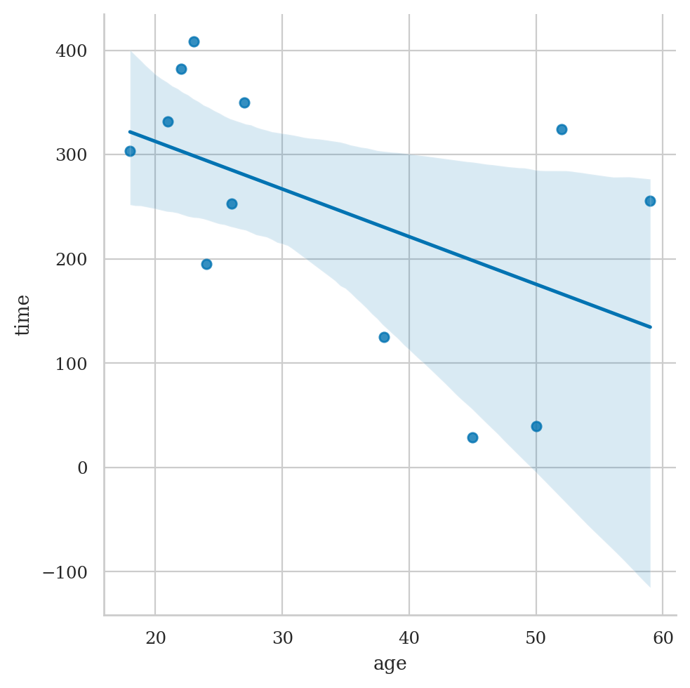
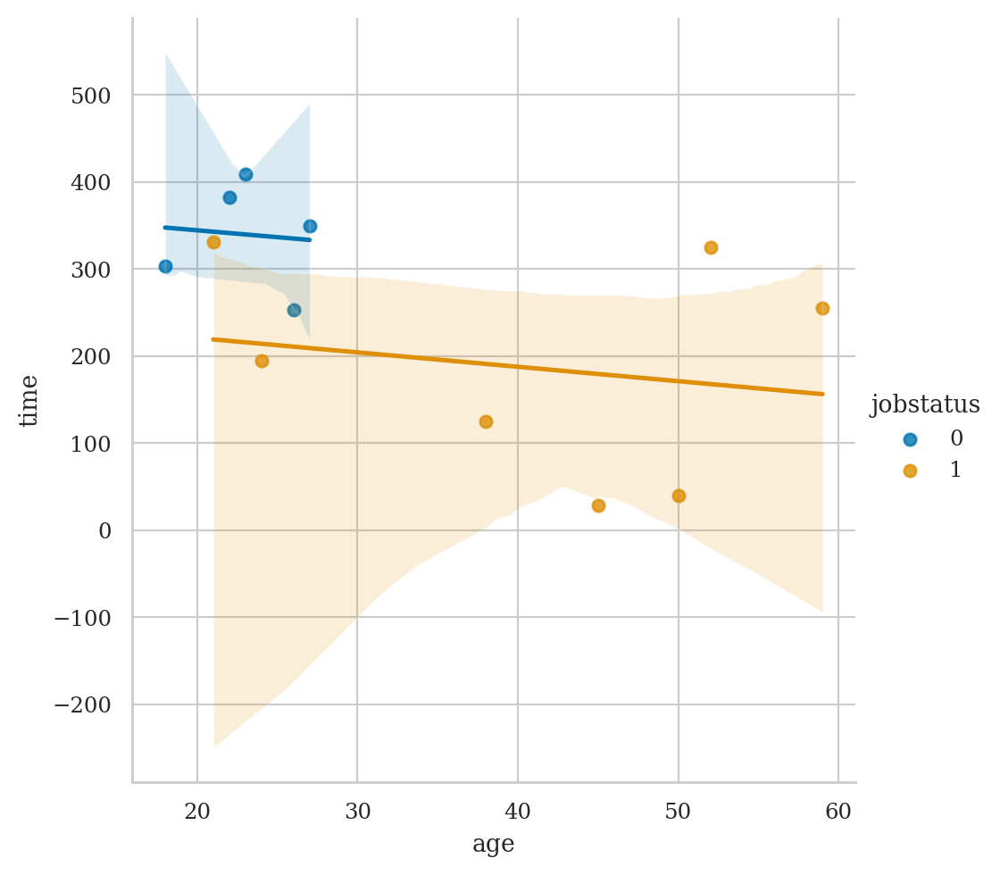
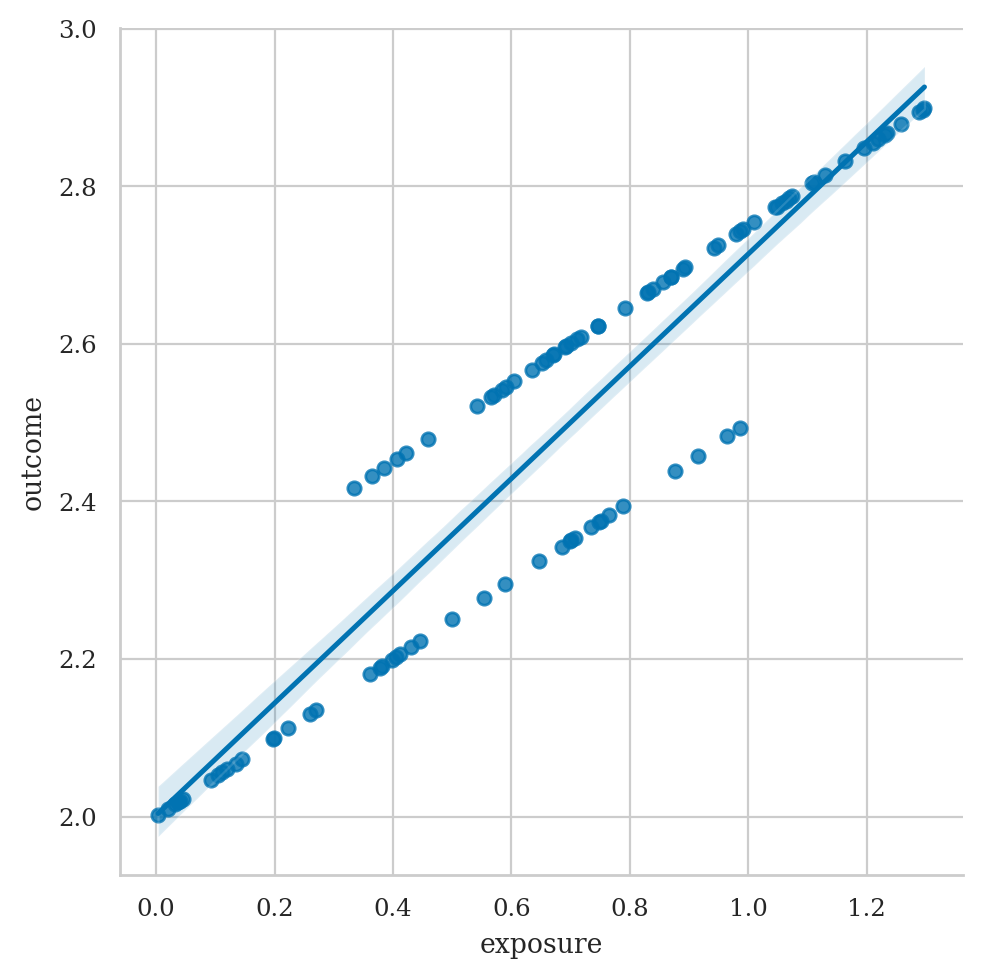
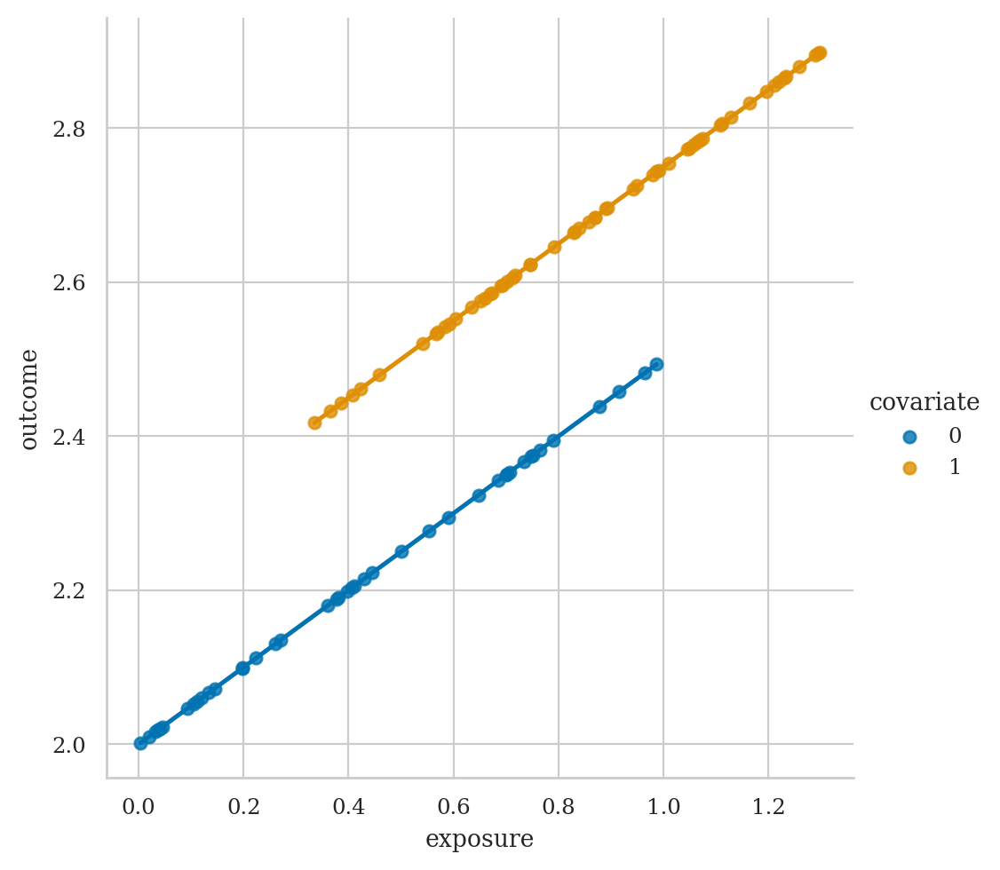
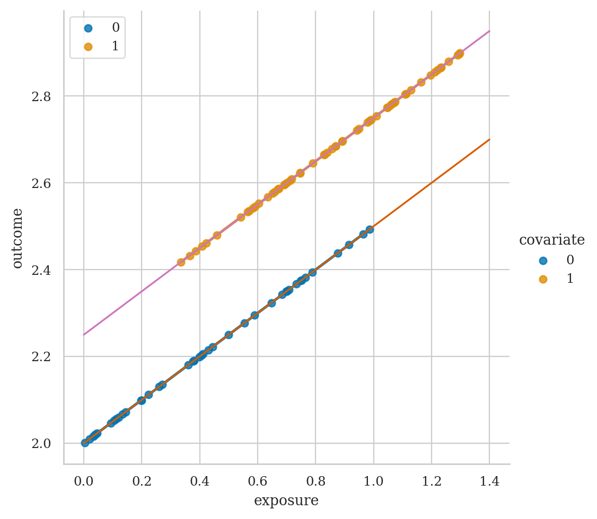
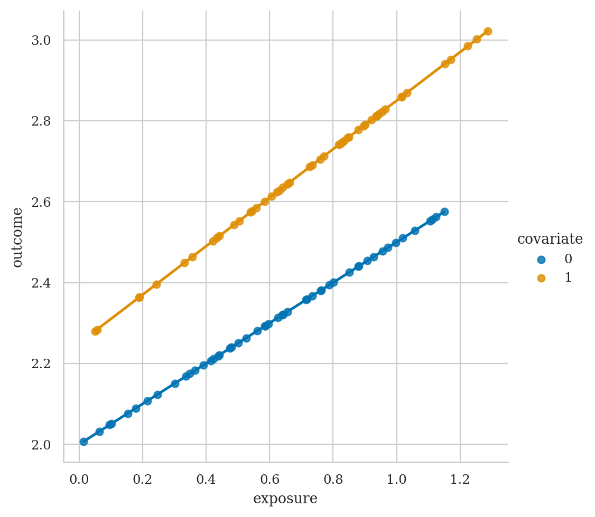

Section 4.5 — Model selection#
This notebook contains the code examples from Section 4.5 Model selection from the No Bullshit Guide to Statistics.
Notebook setup#
# load Python modules
import os
import numpy as np
import pandas as pd
import seaborn as sns
import matplotlib.pyplot as plt
# Figures setup
plt.clf() # needed otherwise `sns.set_theme` doesn't work
from plot_helpers import RCPARAMS
# RCPARAMS.update({'figure.figsize': (10, 3)}) # good for screen
RCPARAMS.update({'figure.figsize': (5, 1.6)}) # good for print
sns.set_theme(
context="paper",
style="whitegrid",
palette="colorblind",
rc=RCPARAMS,
)
# High-resolution please
%config InlineBackend.figure_format = 'retina'
# Where to store figures
DESTDIR = "figures/lm/modelselection"
<Figure size 640x480 with 0 Axes>
# set random seed for repeatability
np.random.seed(42)
import statsmodels.api as sm
import statsmodels.formula.api as smf
from scipy.stats import norm
from scipy.stats import binom
from scipy.stats import bernoulli
Fork#
# U = 2 * np.random.binomial(1, 0.5, N) - 1
# G = np.random.normal(size=N)
# P = np.random.normal(b_GP * G + b_U * U)
# C = np.random.normal(b_PC * P + b_GC * G + b_U * U)
# d = pd.DataFrame.from_dict({"C": C, "P": P, "G": G, "U": U})
# n <- 1000
# Z <- rbern( n , 0.5 )
# X <- rbern( n , (1-Z)*0.1 + Z*0.9 )
# Y <- rbern( n , (1-Z)*0.1 + Z*0.9 )
# cols <- c(4,2)
# N <- 300
# Z <- rbern(N)
# X <- rnorm(N,2*Z-1)
# Y <- rnorm(N,2*Z-1)
# plot( X , Y , col=cols[Z+1] , lwd=3 )
# abline(lm(Y[Z==1]~X[Z==1]),col=2,lwd=3)
# abline(lm(Y[Z==0]~X[Z==0]),col=4,lwd=3)
# abline(lm(Y~X),lwd=3)
Example#
Example 2 from Why We Should Teach Causal Inference: Examples in Linear Regression With Simulated Data
np.random.seed(1897)
n = 1000
iqs = norm(100,15).rvs(n)
ltimes = 200 - iqs + norm(0,1).rvs(n)
tscores = 0.5*iqs + 0.1*ltimes + norm(0,1).rvs(n)
df2 = pd.DataFrame({
"iq":iqs,
"ltime": ltimes,
"tscore": tscores
})
lm2a = smf.ols("tscore ~ ltime", data=df2).fit()
lm2a.params
Intercept 99.602100
ltime -0.395873
dtype: float64
lm2b = smf.ols("tscore ~ ltime + iq", data=df2).fit()
lm2b.params
Intercept 3.580677
ltime 0.081681
iq 0.482373
dtype: float64
Pipe#
# SR example
# cols <- c(4,2)
# N <- 300
# X <- rnorm(N)
# Z <- rbern(N,inv_logit(X))
# Y <- rnorm(N,(2*Z-1))
# plot( X , Y , col=cols[Z+1] , lwd=3 )
# abline(lm(Y[Z==1]~X[Z==1]),col=2,lwd=3)
# abline(lm(Y[Z==0]~X[Z==0]),col=4,lwd=3)
# abline(lm(Y~X),lwd=3)
Example#
Example 1 from Why We Should Teach Causal Inference: Examples in Linear Regression With Simulated Data
np.random.seed(1896)
n = 1000
learns = norm(0,1).rvs(n)
knows = 5*learns + norm(0,1).rvs(n)
undstds = 3*knows + norm(0,1).rvs(n)
df1 = pd.DataFrame({
"learn":learns,
"know": knows,
"undstd": undstds
})
lm1a = smf.ols("undstd ~ learn", data=df1).fit()
lm1a.params
Intercept -0.045587
learn 14.890022
dtype: float64
lm1b = smf.ols("undstd ~ learn + know", data=df1).fit()
lm1b.params
Intercept -0.036520
learn 0.130609
know 2.975806
dtype: float64
Collider#
# cols <- c(4,2)
# N <- 300
# X <- rnorm(N)
# Y <- rnorm(N)
# Z <- rbern(N,inv_logit(2*X+2*Y-2))
# plot( X , Y , col=cols[Z+1] , lwd=3 )
# abline(lm(Y[Z==1]~X[Z==1]),col=2,lwd=3)
# abline(lm(Y[Z==0]~X[Z==0]),col=4,lwd=3)
# abline(lm(Y~X),lwd=3)
Example#
Example 3 from Why We Should Teach Causal Inference: Examples in Linear Regression With Simulated Data
np.random.seed(42)
n = 1000
ntwks = norm(0,1).rvs(n)
comps = norm(0,1).rvs(n)
boths = ((ntwks > 1) | (comps > 1))
lucks = bernoulli(0.05).rvs(n)
proms = (1 - lucks)*boths + lucks*(1 - boths)
df3 = pd.DataFrame({
"ntwk":ntwks,
"comp": comps,
"prom": proms,
})
Without adjusting for the collider prom,
there is almost no effect of the network ability on competence.
lm3a = smf.ols("comp ~ ntwk", data=df3).fit()
lm3a.params
Intercept 0.071632
ntwk -0.041152
dtype: float64
But with adjustment for prom,
there seems to be a negative effect.
lm3b = smf.ols("comp ~ ntwk + prom", data=df3).fit()
lm3b.params
Intercept -0.290081
ntwk -0.239975
prom 1.087964
dtype: float64
The false negative effect can also appear from sampling bias, e.g. if we restrict our analysis only to people who were promoted.
df3proms = df3[df3["prom"]==1]
lm3c = smf.ols("comp ~ ntwk", data=df3proms).fit()
lm3c.params
Intercept 0.898530
ntwk -0.426244
dtype: float64
Selection bias#
Benefits of random assignment#
Example#
Example 4 from Why We Should Teach Causal Inference: Examples in Linear Regression With Simulated Data
np.random.seed(1896)
n = 1000
iqs = norm(100,15).rvs(n)
groups = bernoulli(p=0.5).rvs(n)
ltimes_exp = 80*groups + 120*(1-groups)
tscores = 0.5*iqs + 0.1*ltimes_exp + norm(0,1).rvs(n)
df4 = pd.DataFrame({
"iq":iqs,
"ltime": ltimes_exp,
"tscore": tscores
})
# non-randomized # random assignment
df2.corr()["iq"]["ltime"], df4.corr()["iq"]["ltime"]
(-0.9979264589333364, -0.020129851374243963)
df4.groupby("ltime")["iq"].mean()
ltime
80 99.980423
120 99.358152
Name: iq, dtype: float64
lm4a = smf.ols("tscore ~ ltime", data=df4).fit()
lm4a.params
Intercept 50.688293
ltime 0.091233
dtype: float64
lm4b = smf.ols("tscore ~ ltime + iq", data=df4).fit()
lm4b.params
Intercept -0.303676
ltime 0.099069
iq 0.503749
dtype: float64
lm4c = smf.ols("tscore ~ iq", data=df4).fit()
lm4c.params
Intercept 9.896117
iq 0.501168
dtype: float64
Variable selection#
# load the dataset
doctors = pd.read_csv("../datasets/doctors.csv")
# fit the short model
formula2 = "score ~ 1 + alc + weed + exrc"
lm2 = smf.ols(formula2, data=doctors).fit()
# fit long model with caffeine
formula2c = "score ~ 1 + alc + weed + exrc + caf"
lm2c = smf.ols(formula2c, data=doctors).fit()
# fit long model with useless varaible
formula2p = "score ~ 1 + alc + weed + exrc + permit"
lm2p = smf.ols(formula2p, data=doctors).fit()
Comparing metrics#
lm2.aic, lm2c.aic, lm2p.aic
(1103.2518084235273, 1092.066440497514, 1102.6030626936558)
lm2.bic, lm2c.bic, lm2p.bic
(1115.4512324525256, 1107.3157205337616, 1117.8523427299035)
lm2.fvalue, lm2c.fvalue, lm2p.fvalue
(270.34350189265837, 222.5179385249417, 205.51932993062275)
F-test for the submodel#
F, p, _ = lm2c.compare_f_test(lm2)
F, p
(13.317646938672294, 0.00036159809072859004)
The \(p\)-value is smaller than \(0.05\),
so we conclude that adding the variable caf improves the model.
F, p, _ = lm2p.compare_f_test(lm2)
F, p
(2.5857397307381698, 0.10991892492566509)
The \(p\)-value is greater than \(0.05\),
so we conclude that adding the variable permit doesn’t improve the model.
Likelihood ratio test#
lm2c.compare_lr_test(lm2)
(13.185367926013441, 0.0002821434157606992, 1.0)
lm2p.compare_lr_test(lm2)
(2.648745729871507, 0.10363163447814171, 1.0)
Lagrange multiplier test (optional)#
# workaround to avoid bug
lm2_np = sm.OLS(lm2.model.endog, lm2.model.exog).fit()
lm2c_np = sm.OLS(lm2c.model.endog, lm2c.model.exog).fit()
# Lagrange Multiplier test to check short model
lm2c_np.compare_lm_test(lm2_np)
(12.643516756348609, 0.00037687035845298725, 1.0)
Explanations#
Discussion#
Exercises#
Links#
CUT MATERIAL#
Players dataset#
players_full = pd.read_csv("../datasets/players_full.csv")
Plot of linear model for time ~ 1 + age#
sns.lmplot(x="age", y="time", data=players_full)
<seaborn.axisgrid.FacetGrid at 0x7f963e04bbb0>

import statsmodels.formula.api as smf
model1 = smf.ols('time ~ 1 + age', data=players_full)
result1 = model1.fit()
result1.summary()
/opt/hostedtoolcache/Python/3.8.18/x64/lib/python3.8/site-packages/scipy/stats/_stats_py.py:1736: UserWarning: kurtosistest only valid for n>=20 ... continuing anyway, n=12
warnings.warn("kurtosistest only valid for n>=20 ... continuing "
| Dep. Variable: | time | R-squared: | 0.260 |
|---|---|---|---|
| Model: | OLS | Adj. R-squared: | 0.186 |
| Method: | Least Squares | F-statistic: | 3.516 |
| Date: | Fri, 03 May 2024 | Prob (F-statistic): | 0.0902 |
| Time: | 17:35:45 | Log-Likelihood: | -72.909 |
| No. Observations: | 12 | AIC: | 149.8 |
| Df Residuals: | 10 | BIC: | 150.8 |
| Df Model: | 1 | ||
| Covariance Type: | nonrobust |
| coef | std err | t | P>|t| | [0.025 | 0.975] | |
|---|---|---|---|---|---|---|
| Intercept | 403.8531 | 88.666 | 4.555 | 0.001 | 206.292 | 601.414 |
| age | -4.5658 | 2.435 | -1.875 | 0.090 | -9.991 | 0.859 |
| Omnibus: | 2.175 | Durbin-Watson: | 2.490 |
|---|---|---|---|
| Prob(Omnibus): | 0.337 | Jarque-Bera (JB): | 0.930 |
| Skew: | -0.123 | Prob(JB): | 0.628 |
| Kurtosis: | 1.659 | Cond. No. | 97.0 |
Notes:
[1] Standard Errors assume that the covariance matrix of the errors is correctly specified.
Plot of linear model for time ~ 1 + age + jobstatus#
We can “control for jobstatus” by including the variable in the linear model.
Essentially,
we’re fitting two separate models,
one for jobstatus=0 players and one for jobstatus=1 players.
sns.lmplot(x="age", y="time", hue="jobstatus", data=players_full)
<seaborn.axisgrid.FacetGrid at 0x7f963de08ac0>

import statsmodels.formula.api as smf
model2 = smf.ols('time ~ 1 + age + C(jobstatus)', data=players_full)
result2 = model2.fit()
result2.params
# print(result2.summary().as_text())
Intercept 377.817172
C(jobstatus)[T.1] -124.013781
age -1.650913
dtype: float64
Manual select subset with jobstatus 1#
# import statsmodels.formula.api as smf
# players_job1 = players_full[players_full["jobstatus"]==1]
# model3 = smf.ols('time ~ 1 + age', data=players_job1)
# result3 = model3.fit()
# result3.summary()
Example confoudouder 2#
via https://stats.stackexchange.com/a/17338/62481
import numpy as np
from scipy.stats import uniform, randint
covariate = randint(0,2).rvs(100)
exposure = uniform(0,1).rvs(100) + 0.3 * covariate
outcome = 2.0 + 0.5*exposure + 0.25*covariate
# covariate, exposure, outcome
df2 = pd.DataFrame({
"covariate":covariate,
"exposure":exposure,
"outcome":outcome
})
sns.lmplot(x="exposure", y="outcome", data=df2)
<seaborn.axisgrid.FacetGrid at 0x7f963dd3a4f0>

import statsmodels.formula.api as smf
model2a = smf.ols('outcome ~ exposure', data=df2)
result2a = model2a.fit()
# result2a.summary()
result2a.params
Intercept 2.001411
exposure 0.712343
dtype: float64
fg = sns.lmplot(x="exposure", y="outcome", hue="covariate", data=df2)

model2b = smf.ols('outcome ~ exposure + C(covariate)', data=df2)
result2b = model2b.fit()
# result2b.summary()
result2b.params
Intercept 2.00
C(covariate)[T.1] 0.25
exposure 0.50
dtype: float64
x = np.linspace(0,1.4)
m = result2b.params["exposure"]
b0 = result2b.params["Intercept"]
b1 = b0 + result2b.params["C(covariate)[T.1]"]
b0, b1
y0 = b0 + m*x
y1 = b1 + m*x
ax = fg.figure.axes[0]
sns.lineplot(x=x, y=y0, ax=ax, color="r")
sns.lineplot(x=x, y=y1, ax=ax, color="m")
<Axes: xlabel='exposure', ylabel='outcome'>
fg.figure

model2c = smf.ols('outcome ~ -1 + exposure*C(covariate)', data=df2)
result2c = model2c.fit()
result2c.summary()
# result2c.params
| Dep. Variable: | outcome | R-squared: | 1.000 |
|---|---|---|---|
| Model: | OLS | Adj. R-squared: | 1.000 |
| Method: | Least Squares | F-statistic: | 6.228e+29 |
| Date: | Fri, 03 May 2024 | Prob (F-statistic): | 0.00 |
| Time: | 17:35:47 | Log-Likelihood: | 3246.2 |
| No. Observations: | 100 | AIC: | -6484. |
| Df Residuals: | 96 | BIC: | -6474. |
| Df Model: | 3 | ||
| Covariance Type: | nonrobust |
| coef | std err | t | P>|t| | [0.025 | 0.975] | |
|---|---|---|---|---|---|---|
| C(covariate)[0] | 2.0000 | 5.31e-16 | 3.77e+15 | 0.000 | 2.000 | 2.000 |
| C(covariate)[1] | 2.2500 | 8.71e-16 | 2.58e+15 | 0.000 | 2.250 | 2.250 |
| exposure | 0.5000 | 1.02e-15 | 4.89e+14 | 0.000 | 0.500 | 0.500 |
| exposure:C(covariate)[T.1] | -8.882e-16 | 1.41e-15 | -0.630 | 0.530 | -3.69e-15 | 1.91e-15 |
| Omnibus: | 1279.861 | Durbin-Watson: | 2.085 |
|---|---|---|---|
| Prob(Omnibus): | 0.000 | Jarque-Bera (JB): | 14.912 |
| Skew: | -0.362 | Prob(JB): | 0.000578 |
| Kurtosis: | 1.252 | Cond. No. | 10.9 |
Notes:
[1] Standard Errors assume that the covariance matrix of the errors is correctly specified.
# import seaborn as sns
# import matplotlib.pyplot as plt
# df = sns.load_dataset('iris')
# sns.regplot(x=df["sepal_length"], y=df["sepal_width"], line_kws={"color":"r","alpha":0.7,"lw":5})
Random slopes and random intercepts#
via https://patsy.readthedocs.io/en/latest/quickstart.html
You can even write interactions between categorical and numerical variables.
Here we fit two different slope coefficients for x1; one for the a1 group, and one for the a2 group:
dmatrix("a:x1", data)
This is what matches the seaborn plot when using hue as an extra variable
model2d = smf.ols('outcome ~ 1 + C(covariate) + C(covariate):exposure', data=df2)
result2d = model2d.fit()
# result2d.summary()
result2d.params
Intercept 2.00
C(covariate)[T.1] 0.25
C(covariate)[0]:exposure 0.50
C(covariate)[1]:exposure 0.50
dtype: float64
import numpy as np
from scipy.stats import uniform, randint
covariate3 = randint(0,2).rvs(100)
exposure3 = uniform(0,1).rvs(100) + 0.3 * covariate
outcome3 = 2.0 + 0.25*covariate3 + (0.5 + 0.1*covariate3)*exposure3
# \ / \ /
# different inst. different slopes
df3 = pd.DataFrame({
"covariate":covariate3,
"exposure":exposure3,
"outcome":outcome3
})
fg = sns.lmplot(x="exposure", y="outcome", hue="covariate", data=df3)

model3d = smf.ols('outcome ~ 1 + C(covariate) + C(covariate):exposure', data=df3)
result3d = model3d.fit()
result3d.params
Intercept 2.00
C(covariate)[T.1] 0.25
C(covariate)[0]:exposure 0.50
C(covariate)[1]:exposure 0.60
dtype: float64
# ALT.
model3e = smf.ols('outcome ~ 0 + C(covariate) + C(covariate):exposure', data=df3)
result3e = model3e.fit()
result3e.params
C(covariate)[0] 2.00
C(covariate)[1] 2.25
C(covariate)[0]:exposure 0.50
C(covariate)[1]:exposure 0.60
dtype: float64